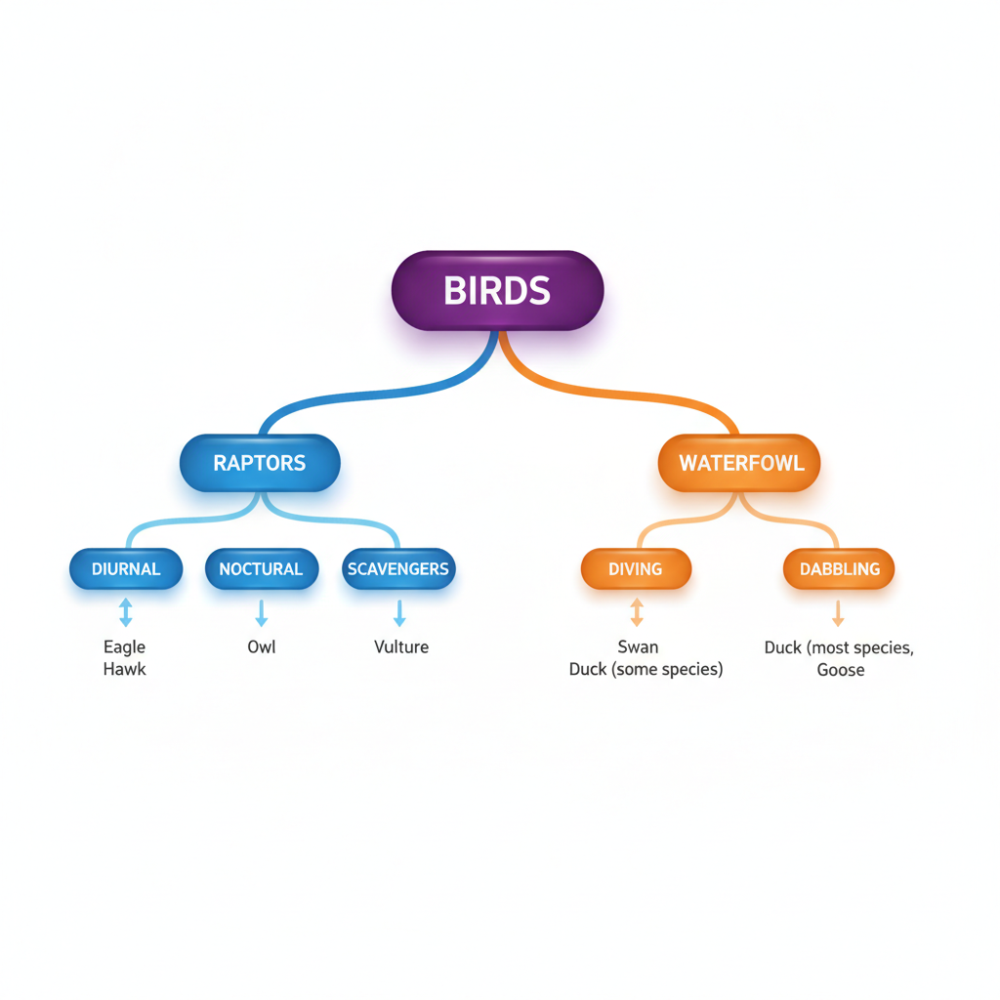

Thinking, Language & Intelligence
You likely believe you are a fairly rational person. You pay attention to evidence, you consider the facts, and when you make a decision you think it through. Most people believe this about themselves — and most people are wrong in a specific, measurable way.
Research consistently shows that human reasoning is not a slow, impartial weighing of evidence. It is fast, pattern-based, and shaped by shortcuts that usually serve us well but sometimes lead us badly astray. We overestimate the likelihood of events we can easily call to mind. We judge someone as probably a feminist bank teller because she fits a certain profile, even when the logic of probability rules that out. We stick with the first number we hear when estimating something we know nothing about. And we almost never notice any of this happening.
This is not a character flaw. These patterns are the predictable products of a cognitive system that evolved to make quick, good-enough judgments under uncertainty — and they are surprisingly resistant to correction, even when we know about them. As you work through this chapter, try to catch yourself using the very shortcuts we discuss. It is harder than it sounds.
Stop and Predict: Without looking anything up, write down your answer: are there more English words that begin with k, or more English words that have k as the third letter? Also write one sentence explaining how you made the judgment. You will return to this after reading Section 2.
Where This Fits
Why is one good concept worth more than a hundred memorized facts? Chapter 8 explored how memory works — how information is encoded, stored, and retrieved. This chapter asks what happens after retrieval: how we use information to form concepts, solve problems, make decisions, and communicate. These cognitive processes are among the most complex the human brain performs and are the subject of an entire field (cognitive psychology), of which this chapter gives a selective survey.
Language is introduced here because it is both a cognitive tool and the medium through which most of what we know was acquired. Intelligence follows because modern conceptions of intelligence are rooted in cognitive science — IQ tests are, at bottom, measures of certain cognitive abilities.
Connections to other chapters: Working memory (Ch. 8) is the active workspace for reasoning and problem-solving — its capacity limits directly constrain what we can hold in mind while thinking. Attention and perception (Ch. 4) shape what information even enters reasoning. Social cognition (Ch. 11) extends cognitive biases into the realm of person perception and group judgment. Intelligence measurement connects forward to personality assessment (Ch. 11, glossed within Social Psychology) and to psychological diagnosis (Ch. 13), where IQ scores play a contested role.
Learning Objectives
- Distinguish between concepts, prototypes, and exemplars, and explain how they organize knowledge.
- Contrast algorithms and heuristics as problem-solving strategies and give an example of each.
- Identify the availability heuristic, representativeness heuristic, confirmation bias, framing effect, and anchoring bias, and describe how each distorts judgment.
- Explain the System 1 / System 2 distinction and apply it to everyday reasoning errors.
- Describe the basic structure of human language (phoneme → morpheme → syntax) and evaluate what current evidence does and doesn't support about Chomsky's innate Language Acquisition Device.
- Evaluate the strong and weak versions of the linguistic relativity hypothesis, and explain why some flagship relativity studies are stronger evidence than others.
- Compare and contrast Spearman's g, fluid vs. crystallized intelligence, Gardner's multiple intelligences, and Sternberg's triarchic theory, and explain why the latter two are better critiques of IQ testing than replacements for it.
- Explain what IQ standardization means, what the Flynn Effect shows, and why reliability and validity matter for interpreting any intelligence test score.
Section 1: Concepts, Categories, and Problem Solving
Concepts and Prototypes
Your brain does not store individual experiences as isolated snapshots. It organizes them into concepts — mental categories that group objects, events, and ideas based on shared features. Concepts allow you to recognize a new dog you have never seen before as a dog: you compare it to your stored concept of "dog" without consciously listing every feature.
At the center of most natural concepts sits a prototype: the most typical or representative member of the category. When you hear "bird," you probably think of something like a robin or a sparrow, not a penguin or an ostrich — even though all four are equally birds. The prototype is the mental default: new instances are judged as more or less bird-like depending on how closely they match it (Rosch, 1975).
Alongside prototypes, people also use exemplars — specific remembered members of a category — particularly for unusual cases. When someone says "exotic fruit," your concept is unlikely to have a strong prototype; you are more likely to reason from specific examples you have encountered.
Concepts are organized hierarchically. "Animal" is a superordinate category containing "dog," which is a basic-level category containing "golden retriever" as a subordinate example. Most everyday thinking happens at the basic level — specific enough to be useful, general enough to be efficient.

Put these three ideas together and a single picture emerges: a concept is not a definition or a checklist of defining features — it is a location in a compressed space of meaning, defined by its pattern of relations to everything else you know. "Apple" sits near fruit, food, sweetness, trees, red/green/yellow, seeds, pie, and school lunches — a region built up from repeated episodes and pruned down to whatever generalizes well, not a filing-cabinet entry with fixed boundaries. This is the same compression this book keeps finding at every level of the system: raw experience is too large and too specific to keep in full, so what survives is the structure that predicts — the prototype, the neighborhood of exemplars, the place in the hierarchy — while the rest is let go. That compression is exactly why concepts are useful (they let you recognize a dog you've never seen before) and exactly why they mislead in predictable ways (a penguin has to fight its way toward a prototype built mostly from robins and sparrows).

There's now real neuroscience consistent with this "concept as location" picture, though it should be read carefully. Huth and colleagues (2016) mapped which brain regions respond to which kinds of meaning while people listened to narrated stories in an fMRI scanner, and found that meaning is represented across a broad, continuous, geometrically organized swath of cortex rather than filed into discrete word-boxes. That doesn't mean the brain literally stores concepts as coordinates the way a map stores locations — the semantic-space model is a tool that predicts brain activity well, not a description of the brain's actual code — but it is real evidence, at the level of measured brain activity, for the same "location in a space of relations" picture built from behavior alone above.
This location also keeps moving over development. Chapter 10 covers Piaget's stage theory in full; the spine-level version is worth naming here. Assimilation — using your current concept to interpret something new — is this book's prediction step. Accommodation — reshaping the concept when the new case doesn't fit — is prediction error forcing an update. A toddler's overextended "doggie" (applied to any four-legged animal) is a coarse, underdifferentiated region of semantic space; accommodation across repeated corrective episodes sharpens its boundaries into the adult concept. Expertise runs the same process well into adulthood — it doesn't replace prototypes and exemplars with something else, it makes the semantic neighborhood denser and more finely differentiated.
Most students' first mental model of reinforcement (Chapter 7) is a crude prototype: reward = reinforcement, and reinforcement is whatever feels good. That model handles the obvious cases fine — until it meets negative reinforcement, which removes something unpleasant rather than adding something pleasant, and doesn't fit the "feels good" prototype at all. The crude model mis-predicts, the mismatch registers, and the concept has to be rebuilt around what actually defines reinforcement: any consequence that makes a behavior more likely to recur, regardless of whether it works by adding or removing something. That rebuilt concept — sharper, less prototype-dependent — is what lets you correctly classify a case you have never seen before, which is the entire point of having a concept instead of a list of memorized examples.
Algorithms and Heuristics
When you face a problem, you can approach it in two fundamentally different ways.
An algorithm is a step-by-step procedure that, if followed correctly, is guaranteed to produce the right answer. Long division is an algorithm. A recipe is an algorithm. The advantage is certainty; the disadvantage is that algorithms are slow and not always available. Searching every possible chess move before choosing is theoretically an algorithm, but the number of moves in a typical chess game is greater than the number of atoms in the observable universe — no human (or current computer playing in real time) uses this approach.
A heuristic is a cognitive shortcut — a rule of thumb that usually produces a good answer quickly, without guaranteeing the best answer. "If it looks like a duck and quacks like a duck, treat it as a duck" is a heuristic for category assignment. Heuristics are how virtually all everyday human thinking works. They are not failures of rationality; they are the operating system that allows a three-pound brain to navigate a complex world in real time. Heuristics run on the same compression logic as the concepts in Section 1, just applied to decisions instead of categories: a heuristic keeps the piece of a judgment that predicts well most of the time and discards the rest — which is exactly why the discarded part occasionally turns out to matter. Section 2 catalogs when that trade-off breaks down in predictable ways.
The study of when and why heuristics go wrong is one of the most productive areas in cognitive science — see Section 2.
Problem Solving: Strategies and Obstacles
Much of problem solving comes down to choosing a representation of the problem — working forward from the current state, working backward from the goal, or targeting the largest current gap between the two (means-ends analysis) — and the wrong representation creates the wrong search space no matter how hard you then search within it.
Two classic obstacles block effective problem solving, and both are really a single failure mode: an old compressed model refusing to update for a new case.
Mental set is the tendency to approach a new problem using a strategy that worked before, even when it does not apply. A solver who has just been given a series of water-jug problems requiring a complex three-step formula will often apply that formula to a later problem that could be solved much more simply — because the earlier strategy is primed and active (Luchins, 1942).

Functional fixedness is a specific form of mental set in which we see an object only in terms of its conventional use and fail to notice that it could serve another function. In Duncker's (1945) classic candle problem, participants are given a candle, a box of thumbtacks, and matches and asked to mount the candle on a wall so it burns without dripping on a table. Most people try to tack the candle directly to the wall or melt it onto the wall. The solution — tacking the box to the wall and using it as a platform — requires seeing the thumbtack box as a shelf, not just a container. Functional fixedness prevents this reframing.

Insight is the sudden, often surprising shift in representation that unlocks a problem — the "aha" moment when the box becomes a shelf, or when two separately encoded pieces of information suddenly combine into a solution. Insight problems feel qualitatively different from analytical problems: they resist incremental progress, then resolve all at once, because what changes isn't the amount of information available but the compressed model organizing it (Jung-Beeman et al., 2004).
Section 2: Heuristics, Biases, and the Two-System View
System 1 and System 2
The single most useful organizing framework for understanding reasoning errors comes from the psychologist Daniel Kahneman, summarized in his 2011 book Thinking, Fast and Slow. Kahneman distinguishes two modes of processing:
System 1 is fast, automatic, associative, and largely unconscious. It reads emotional expressions effortlessly, completes familiar phrases, and produces intuitive answers almost instantly. It cannot be fully turned off — you cannot not read a word that appears in front of you. System 1 is the source of intuition, of gut feelings, and of virtually all the cognitive shortcuts described in this section.
System 2 is slow, deliberate, effortful, and rule-governed. It is the system you engage when you work through a long-division problem, check your reasoning for errors, or resist the urge to say something you'd regret. It requires sustained attention and depletes with mental fatigue.
The critical point is that System 1 is not the "bad" system that we should try to override with System 2. System 1 handles most of life correctly — recognizing your friend's face across a crowded room, catching yourself about to step off a curb when a car is coming, intuiting that something in a conversation is wrong before you can articulate what. The problem arises in specific domains where System 1's shortcuts produce predictable, correctable errors, and where System 2 fails to catch them — either because it is not engaged, or because the System 1 output feels right.
System 1 is fast and associative — not inherently flawed. System 2 is slow and deliberate — but it can also be used to rationalize bad decisions after the fact, or to construct logically valid arguments for false conclusions. The two systems are better understood as different processing modes than as a conflict between irrationality and rationality.
![The dual-process model of thinking. System 1 (fast, automatic) handles reading a familiar word, recognizing a face, and catching yourself before stepping off a curb — speed, intuition, and unconscious processing. System 2 (slow, deliberate) handles working through a math problem, checking your reasoning for mistakes, and resisting an impulse — effort, rules, and conscious control. Both systems are useful; System 1 handles most of life correctly, while System 2 is the check that should catch its predictable errors.](../images/ch09/fig_system1_system2_dual_process.png)
The Availability Heuristic
When estimating the frequency or probability of something, people tend to judge how often it occurs based on how easily examples come to mind. This is the availability heuristic (Tversky & Kahneman, 1973).
In most circumstances this works well — frequent things are easier to bring to mind than rare things. But availability is affected by factors other than actual frequency: vividness, recency, media coverage, and personal relevance. Shark attacks are rare but dramatic and heavily reported, so people overestimate their likelihood. Car accidents are common but familiar, so people underestimate their relative risk. Mortality from smoking is distributed across millions of individual cases over decades, which makes it less vivid than a single plane crash, even though the smoking toll is vastly larger.
Return to your prediction from the Misconception Opener. The point is not whether you guessed correctly — it is how you generated the answer. Most people say there are more words starting with k. In fact, there are roughly three times as many words with k as the third letter. But words that start with k (king, key, kite) are much easier to pull from memory than words where k is the third letter (ask, ski, ink) — and ease of recall gets mistaken for frequency. The method you described in your one-sentence explanation is the availability heuristic in action (Tversky & Kahneman, 1973).
The Representativeness Heuristic
When judging whether something belongs to a category, people often assess how well it matches their prototype of that category rather than relying on base-rate probabilities. This is the representativeness heuristic (Tversky & Kahneman, 1974).
The most famous demonstration is the Linda problem:
Linda is 31 years old, single, outspoken, and very bright. She majored in philosophy. As a student, she was deeply concerned with issues of discrimination and social justice, and also participated in anti-nuclear demonstrations.
Which is more probable? A. Linda is a bank teller. B. Linda is a bank teller and is active in the feminist movement.
When Tversky and Kahneman (1983) posed this question, roughly 85% of participants chose option B. This is logically impossible — the probability of two things both being true cannot be higher than the probability of either one alone. Every feminist bank teller is necessarily a bank teller, so A must be at least as probable as B.
The error arises because the description of Linda fits our prototype of a feminist activist. Option B is more representative of Linda's description, so System 1 judges it as more probable — overriding the probability logic that would require Option A to win. Tversky and Kahneman (1983) called this the conjunction fallacy: treating the conjunction of two events as more probable than either event alone, when it cannot be.

What they did: Participants read a brief personality sketch of "Linda," constructed to fit the prototype of someone politically engaged and socially conscious. They were then given a list of statements about Linda and asked to rank them by probability.
What they found: ~85% ranked "bank teller and feminist activist" as more probable than "bank teller" — a direct violation of the conjunction rule of probability. The effect held even when participants had training in statistics and even when the word "probable" was replaced with an explicit frequency framing ("how many out of 100 people with this description…").
What it means: The representativeness heuristic can override explicitly probabilistic reasoning. This has practical consequences wherever we need to estimate compound probabilities — in medical diagnosis, legal reasoning, risk assessment, and everyday prediction. The persistence of the error under statistical instruction is a key reason researchers began treating these as systematic biases, not just casual mistakes.
Confirmation Bias
Once we form a belief, we tend to seek out, interpret, and remember evidence that supports it — and to discount, ignore, or misremember evidence that contradicts it. This is confirmation bias.
Wason's (1968) selection task is the most studied demonstration. Participants are shown four cards, each with a letter on one side and a number on the other. The cards show: E, K, 4, 7. The rule to test is: "If a card has a vowel on one side, it must have an even number on the other side." Which cards must you turn over to check whether the rule is violated?

Most people turn over E (correct — checking whether the vowel has an even number) and 4 (incorrect — this would only confirm the rule, not test it). Few turn over 7 — yet 7 is the critical card: if 7 has a vowel on its back, the rule is violated. The error reveals confirmation bias in miniature: people test the rule by looking for confirming instances rather than by seeking the disconfirming case that would actually test it.

Confirmation bias is robust across contexts from scientific reasoning to political belief formation. It is one reason two people can examine the same body of evidence and reach opposite conclusions — each is attending to different subsets of it.
The Framing Effect
Decision-making is sensitive to how choices are presented, even when the objective content is identical. Tversky and Kahneman (1981) demonstrated this with the Asian disease problem, described in the Noba module on judgment and decision making (Bazerman, 2026): participants offered a program that saves 200 of 600 people are risk-averse and prefer the certain outcome; participants offered the logically equivalent choice of a program that results in 400 deaths are risk-seeking and prefer the gamble. The frame — losses versus gains — determines the choice, not the underlying probabilities.
The framing effect has documented consequences in medicine (how surgical risks are framed affects patient choices), public policy (organ donation opt-in vs. opt-out defaults produce vastly different donation rates), and financial decisions (loss-framed warnings motivate behavior change more strongly than gain-framed incentives for equivalent outcomes).
Anchoring
When making numerical estimates, people are heavily influenced by an initial number (the "anchor"), even when that number is arbitrary. In a well-known demonstration, participants who were first asked "Is the population of Chicago more or less than 2 million?" subsequently estimated a lower population than participants who were first asked "Is it more or less than 10 million?" — even though both groups knew the question was starting from an arbitrary anchor (Tversky & Kahneman, 1974).
Anchoring operates in salary negotiation (the first offer anchors subsequent counteroffers), in medical diagnosis (the first diagnosis anchors subsequent interpretation of ambiguous symptoms), and in everyday estimation (an initial Google search result anchors follow-up searches).
![Biases as question substitution. Each heuristic covered in this section can be described as System 1 quietly answering an easier "shortcut question" in place of the harder question actually being asked: availability substitutes "what comes to mind quickly?" for "how common is it?"; representativeness substitutes "what does it resemble?" for "how likely is this case?"; confirmation bias substitutes "what supports my first belief?" for "is this belief true?"; framing substitutes "does this sound like a gain or a loss?" for "what are the actual outcomes?"; anchoring substitutes "what number did I hear first?" for "what is a fair estimate?"](../images/ch09/fig_bias_question_substitution.png)
The central cognitive-AI connection for this chapter is not about how AI works — it is about how humans respond to AI output.
The problem: AI-generated text is typically grammatically fluent, well-organized, and confident in tone. These are exactly the surface features that System 1 uses to classify output as "smart" and "trustworthy." When something reads like well-reasoned expert writing, your metacognitive System 2 monitoring tends to disengage — the output feels right, so there is no signal to slow down and check.
This is why AI factual errors are often not caught by the people reading them. It is not that the errors are subtle — sometimes they are quite large. It is that the packaging is smooth, and smooth packaging deactivates the checking system. Kahneman's framework predicts exactly this: System 1 processes fluency as a signal of truth. Polished formatting, confident phrasing, and well-structured paragraphs all increase processing fluency — and processing fluency increases perceived accuracy, independent of actual accuracy (Reber & Schwarz, 1999).
The availability problem: Students who have used AI tools and seen them produce accurate, useful outputs many times have built up a mental database of "AI was right." When they ask AI about a topic where it is actually unreliable — a niche historical event, a specific citation, a recent development — the availability heuristic (System 1 says: "I can easily remember it being right before") overcounts past successes and undercounts the specific risk for this kind of query.
Schemas and template-matching: AI language models learn to produce output by detecting statistical patterns in large training corpora. When asked for an "explanation of the availability heuristic," the model produces text that matches the template of textbook explanations it has seen. This is not reasoning about the concept; it is very high-fidelity pattern completion — the same way that a human schema produces plausible-but-reconstructed memory. The critical difference: human schemas are revised through corrective feedback and embodied experience. Model weights do not self-correct through reasoning during a conversation.
A genuine point of convergence, carefully qualified: Tang, LeBel, Jain, and Huth (2023) built a decoder that reconstructs the gist of a story someone is hearing purely from their fMRI activity, using a language model's own semantic representations. That's only possible because human brains and language models represent meaning in ways similar enough to translate between — but resist reading that as proof AI "thinks like a brain." Alignment is a correlational fact about two systems shaped by the same statistical input, not evidence of a shared mechanism, the way two independently evolved wings both solve flight without sharing a skeleton.
The practical implication: Apply this chapter's content to your use of AI. When you encounter AI output that reads like an authoritative source, that is exactly when to engage System 2: check the specific claim, look for the original source, ask whether the evidence is actually cited or just gestured at. Fluency is not accuracy. Confidence of tone is not a quality signal.
Where the analogy breaks: It would be tempting to describe AI as a "System 1 reasoner" — fast, pattern-based, non-deliberate. But that framing misleads. System 1 in humans is fast because it is built on decades of embodied, motivated experience in a world that provided real feedback. An AI model has neither embodied experience nor the kind of motivated goal-states that make heuristics adaptive. The parallel is in the output quality (fluent, confident, sometimes wrong in systematic ways), not in the underlying architecture.
A bridge from heuristics to language. The framing effect earlier in this section is really a demonstration of something bigger: language does not just describe a decision, it helps build the decision problem your System 1 evaluates. "200 people will be saved" and "400 people will die" can describe mathematically identical outcomes, but they compress the situation around different reference points — one around gain and survival, one around loss and death — and prospect theory's account of loss aversion explains why those two compressed framings pull in different directions. The rest of this chapter is about language more generally: the same compression logic that turns raw experience into concepts and heuristics also turns private meaning into the shared, public symbols we call words.
Section 3: Language — Compressing Private Models into Shared Symbols
Every person builds a private model of the world from their own history of experience — their own compressed sense of what "fair," "dangerous," "blue," or "home" means. No one has direct access to another person's model. Language is the tool that lets us coordinate anyway: a public, shared compression system for pointing at private meaning. It works well enough to teach, argue, console, and build civilizations on top of — but it is still a compression. Two people can use the same word, agree on how to use it, and still mean something subtly different by it. That gap isn't a flaw in language; it's the price of compressing something as rich as a lived model of the world into a string of sounds cheap enough to say out loud.
A related, unsettled question is what language is for in the first place. Fedorenko, Piantadosi, and Gibson (2024) argue, from a wide range of neuroscience evidence — including the fact that people with severe aphasia can still reason, plan, and do arithmetic — that language in modern humans is primarily a tool for communication rather than the medium of thought itself. This is not consensus: it stands in direct tension with Chomsky's own long-standing view, discussed below, that language evolved chiefly as an instrument of thought, with communication a secondary use. Both camps have real evidence behind them. Treat this as a genuinely open question — the private-model framing above works either way.
The Structure of Language
Language achieves its compression through a small number of reusable units layered on top of each other — the same "compress now, combine later" logic that makes concepts and heuristics useful, just built out of sound instead of experience.
| Level | What it is | Example |
|---|---|---|
| Phoneme | Smallest sound unit that changes meaning | /p/ vs. /b/: "pin" vs. "bin" |
| Morpheme | Smallest unit that carries meaning | un- + break + -able |
| Syntax | Rules for arranging words into sentences | "cat chased mouse" ≠ "mouse chased cat" |
| Semantics | What words and sentences refer to | — |
| Pragmatics | How meaning depends on context | "Could you pass the salt?" as a request, not a question |
English has roughly 44 phonemes and combines them into a much larger set of morphemes, which recombine into an effectively unlimited number of sentences — a handful of cheap, reusable units generating unbounded meaning downstream, the same pattern that makes DNA's four bases or a Lego set's dozen brick shapes so productive.
How Children Acquire This System
The oldest scientific account, behaviorism (Skinner, 1957), held that children learn language through imitation and reinforcement, gradually approximating adult speech from what caregivers reward. This can't be the whole story: children produce sentences they have never heard ("I goed to the store") with no reinforcement history for that specific rule — something in the system is generating structure, not just repeating it. This is the poverty of the stimulus problem: the input children receive is too fragmentary and error-prone to teach the abstract rules they end up applying correctly to novel cases.
Noam Chomsky's (1965) response was that children aren't blank slates waiting for reinforced phrases — they arrive built to expect certain kinds of structure, a set of innate grammatical principles he called universal grammar, implemented through a hypothesized Language Acquisition Device (LAD). This was a genuine, necessary correction to behaviorism, supported by cross-linguistic universals, a critical period for native-level mastery, and the fact that deaf children acquire sign language on the same developmental timetable as hearing children acquire speech — evidence against imitation of specific sounds as the whole engine of acquisition.
Where the field has moved since is in how literally to take the specific machinery Chomsky proposed. A fully specified, dedicated grammar module is not treated as settled fact by most current researchers. What's replaced it is a more distributed picture: infants are remarkably sensitive statistical learners, able to segment words from continuous, run-together speech after just minutes of exposure to a novel artificial language (Saffran, Aslin, & Newport, 1996). But statistics alone aren't sufficient either — infant phonetic learning depends on live social interaction specifically: American infants exposed to Mandarin through a real person in the room learned Mandarin phonetic contrasts; infants given the identical material through an audio or video recording learned nothing (Kuhl, Tsao, & Liu, 2003). Modern language acquisition research treats reinforcement alone as insufficient, biological preparedness as real, statistical learning as doing much of the heavy lifting, and social interaction as a necessary ingredient statistics alone don't explain.
This debate has taken on a new, current form — one this book is well positioned to engage directly. Large language models learn to produce fluent, grammatically well-formed text without anything resembling a dedicated grammar module built in, which Piantadosi (2023) has argued undercuts the strongest versions of the nativist case. Critics reply that this comparison proves less than it appears to: children acquire language from a few million words of noisy, incomplete input, while language models require many orders of magnitude more text to reach the same competence — Kodner, Payne, and Heinz (2023) put this sharply: humans manage language acquisition despite a poverty of the stimulus, while language models succeed because of a richness of it. That efficiency gap is arguably itself evidence for built-in structure in humans, not against it. There's a second, sharper reason to be cautious about reading LLM fluency as evidence about how children learn language at all: producing well-formed sentences and actually understanding or reasoning about the world are not the same skill. Mahowald, Ivanova, Blank, Kanwisher, Tenenbaum, and Fedorenko (2024) call these formal linguistic competence (knowledge of grammatical patterns) and functional linguistic competence (using language to reason, plan, and refer to the world) — in humans these draw on different neural systems, and language models are currently far better at the first than the second. In this book's own terms: fluent language is a compressed pattern, and a compressed pattern is not the same thing as the model-building it was compressed from.
Linguistic Relativity: Granularity, Not Determinism
If language is a compression of experience into shared symbols, a natural question follows: does the shape of that compression — which distinctions your language bothers to name — change how you experience the world? This is the linguistic relativity hypothesis, associated with Benjamin Lee Whorf, whose writings were compiled posthumously in Language, Thought, and Reality (Whorf, 1956).
The strong version (linguistic determinism) holds that language doesn't just compress thought, it limits it — if your language lacks a word for something, you cannot think it. This is not supported: people routinely reason about, remember, and communicate concepts their language has no single word for.
The better-supported and more interesting weak version is about granularity, not walls. Experience is continuous; language carves it into named categories, and once a distinction has a cheap, automatic, socially reinforced name, it becomes easier to notice, remember, and communicate — while distinctions your language doesn't name remain available, just more effortful.
Color is the clearest case. Russian has two separate basic color words for light blue (goluboy) and dark blue (siniy), where English has only "blue." Russian speakers are measurably faster at discriminating colors that straddle that lexical boundary than English speakers are — and the advantage disappears under a verbal-interference task that occupies the language system, showing the effect really is linguistic, not just perceptual (Winawer et al., 2007). The color spectrum itself hasn't changed; what changed is which boundary got a cheap name.
Spatial language shows the same logic outside of color. Speakers of languages that rely on absolute directional terms (north/south/east/west) rather than egocentric ones (left/right) maintain habitually different spatial representations and appear to track cardinal direction continuously, even indoors (Levinson et al., 2002). The honest version of this claim is about habitual attention, not raw ability — it would overstate the evidence to say this language "causes" better navigation.
Number words show it most starkly. The Pirahã language has no words for exact quantities beyond "few" and "many"; Pirahã speakers perform accurately on tasks involving small, approximate quantities but struggle specifically with tasks requiring exact matching of larger sets (Gordon, 2004). A closely related finding comes from the Mundurukú, whose language also lacks a full counting system: they can compare and even add large approximate quantities well beyond their naming range, but fail specifically at exact arithmetic once quantities exceed four or five (Pica, Lemer, Izard, & Dehaene, 2004). Together these suggest approximate quantity sense doesn't require number words at all — it's built in — but stable exact number, the kind you can hold in memory, compare precisely, and communicate to someone else, depends on a symbolic counting system your language provides. This is not evidence that speakers of these languages are less intelligent — it is evidence that exact-number tracking is a cultural technology language provides, not a cognitive capacity language enables from nothing.
Two more famous findings deserve a place here, with an important caveat. Grammatical gender (German and Spanish speakers describing gendered nouns with gender-stereotyped adjectives) and cross-linguistic time metaphors (Mandarin's reported vertical time metaphor versus English's horizontal one) are both widely taught as flagship relativity evidence. Both have real replication problems: a registered replication of the grammatical-gender finding failed to reproduce the original effect, and at least six independent attempts to replicate the original time-metaphor finding have failed. That doesn't mean the underlying idea is wrong, but it does mean these specific studies are weaker evidence than their fame suggests — worth knowing if you encounter them elsewhere presented as settled examples.
The strong version says language makes certain thoughts impossible — largely discredited. The weak, granularity version says language makes certain distinctions cheaper to notice, remember, and communicate — not impossible to think without the word, just more effortful. Be skeptical of any claim that a language "doesn't have a word for X, so its speakers can't think about X" — and be a little skeptical of any single flashy relativity study, too; several of the most famous ones (grammatical gender, time metaphors) have not held up well under replication.
Section 4: Intelligence — Measuring Model-Building Under Constraints
Intelligence is not, at bottom, a measure of how much a person already knows. It is better understood as a measure of how well a mind can detect structure in new material, compress that structure into a usable model, and transfer the model to situations it wasn't built for. Everything in this section — g, fluid and crystallized intelligence, IQ scores, the Flynn Effect — is really asking some version of that same question, and every measure of it is itself a compression: useful, standardized, and incomplete in specific, predictable ways. That last point matters as much as the measurement itself.
The Question of General Intelligence
What is intelligence? The everyday intuition is that some people are just generally smarter across the board — better at learning, reasoning, problem-solving, and adapting to new situations. This intuition found empirical support in the work of Charles Spearman (1904), who noticed that performance across very different cognitive tasks — verbal ability, spatial reasoning, numerical computation — tends to be positively correlated. People who perform well in one area tend to perform relatively well in others.
Spearman proposed that this co-variation is explained by a single underlying factor he called g — general intelligence. g is not directly observable; it is inferred from the pattern of intercorrelations among specific ability tests. It remains one of the most replicable findings in psychometrics: the positive manifold (all cognitive tests correlate positively with one another) is robust across cultures, ages, and measures (Deary, 2001).
This does not mean that all cognitive abilities are equivalent. g is best thought of as a broad capacity underlying many specific abilities (s factors), much as cardiovascular fitness underlies performance on many different forms of physical exertion without determining any specific athletic skill perfectly. One way to read the positive manifold in this chapter's own terms: performing well across very different cognitive tasks may partly reflect a shared, domain-general resource for building and using compressed models — working memory capacity, processing speed, and the ability to integrate relations across pieces of information all correlate with g. This is a useful teaching frame, not an established fact about what g literally is — psychometrics defines g as an empirical factor, not as "compression ability," and the two should not be treated as interchangeable.
Fluid and Crystallized Intelligence
A major refinement to the single-g model comes from Horn and Cattell (1966), who proposed that general intelligence is better understood as at least two distinct types:
Fluid intelligence (Gf) is the capacity to reason, solve novel problems, and identify patterns independently of specific knowledge — the ability to build a new compressed model on the spot, from material you have never seen and with no existing schema to lean on. Raven's Progressive Matrices, which ask you to detect an abstract pattern in an unfamiliar array of shapes, are close to a pure test of this. Fluid intelligence peaks in early adulthood and declines gradually with age.
Crystallized intelligence (Gc) is the accumulated knowledge, skills, and expertise acquired through experience and education — vocabulary, historical knowledge, procedural expertise. It isn't separate accumulated "stuff" so much as the library of models you've already built and compressed from a lifetime of experience — what you have available to assimilate a new case into, in this chapter's own Section 1 terms. Crystallized intelligence tends to increase or remain stable into late adulthood.
A useful illustration: a 25-year-old computer science student typically outperforms a 65-year-old experienced programmer on puzzles involving novel algorithms (fluid); the experienced programmer typically outperforms the student on diagnosing a complex legacy codebase problem (crystallized).
Practice this in the lab: Fluid intelligence is easiest to understand when you have to infer a rule yourself. Try the Finding the Rule lab, a matrix-style rule-finding exercise, then return here and explain why the task depends less on stored knowledge than on detecting structure in unfamiliar material.
Gardner's and Sternberg's theories, discussed next, both make the same underlying point in different ways: any single IQ score is a lossy compression of cognitive performance, and both theories exist because something real gets left out of that compression. Where they run into trouble is turning that valid critique into a rival measurement model with comparable psychometric support.
Gardner's Multiple Intelligences
Howard Gardner (1985) proposed a more radical departure from the g-factor tradition. In Frames of Mind, Gardner argued that traditional IQ-based conceptions of intelligence are too narrow and culturally biased — they predominantly measure academic-linguistic and logical-mathematical abilities while ignoring others. His original 1983 theory identified seven relatively independent intelligences, each with its own neural basis, developme